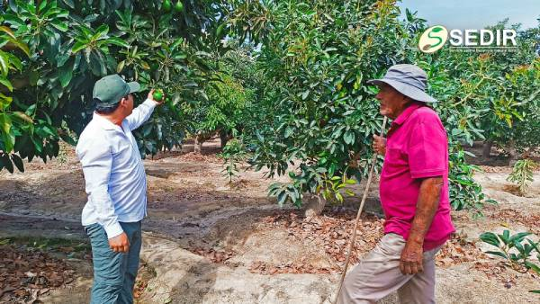
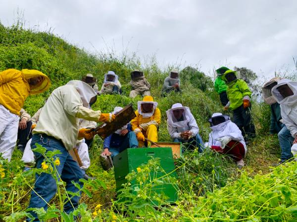
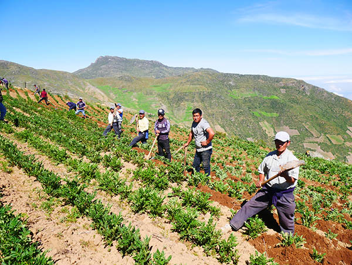
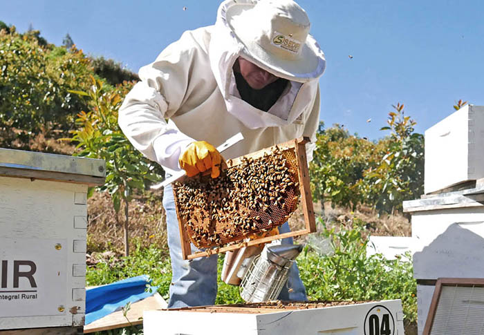
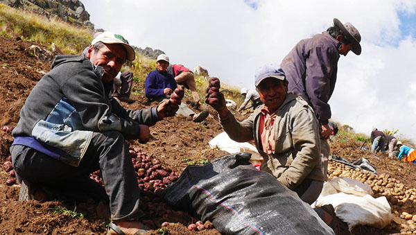
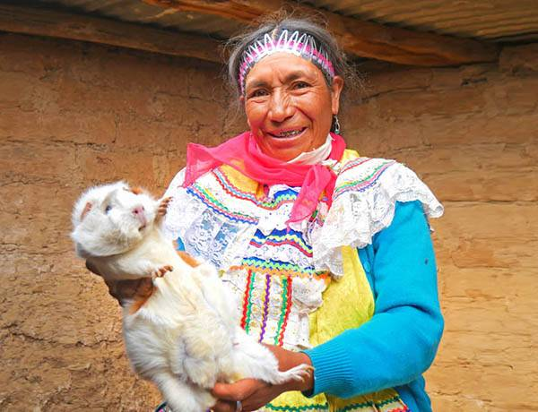
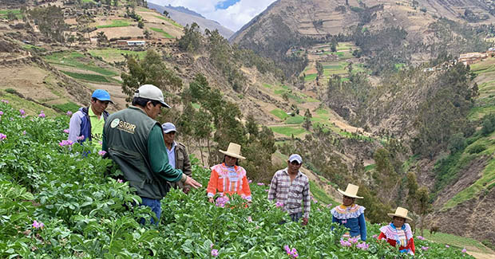

Desde 2012, impulsamos el desarrollo agropecuario y agroindustrial sostenible en el valle de Nepeña, fortaleciendo capacidades locales, transfiriendo tecnología, brindando asistencia técnica especializada y promoviendo la investigación aplicada en alianza con la academia.






